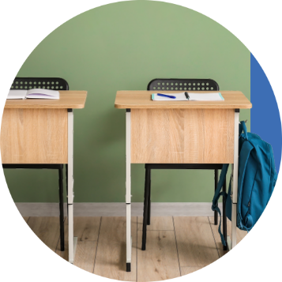
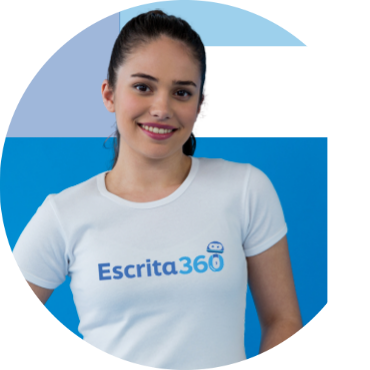

Qual a Diferença das Demais Plataformas

Escrita Autorregulada no Centro
Diferente de plataformas que apenas corrigem textos prontos, a Escrita360 coloca a autorregulação como eixo principal. O estudante vivencia todo o processo de escrita, do planejamento à autoavaliação, em uma experiência imersiva, construída por meio de rascunhos, revisões e reescritas, que transforma a redação em um percurso formativo e contínuo.
Painel de Sentimentos
Recurso voltado ao acompanhamento das competências socioemocionais no processo de escrita. Ele auxilia na regulação de crenças cognitivas e no gerenciamento dos estados afetivos relacionados à produção textual.

Imersão Total no Processo de Escrita
Imersão total no processo de escrita com análises automatizadas: a plataforma oferece um módulo de escrita imersivo que introduz o uso do parágrafo-padrão, ajudando a organizar ideias, estruturar argumentos e dar os primeiros passos com segurança.
Análise Integrada em Tempo Real
Conta com feedbacks e análises mediadas por diferentes recursos de análise textual, de forma rápida e consistente, tais como a verificação da estrutura e fluidez da escrita, frequência das palavras e coesão textual.

Uso de rubricas e evolução por níveis
Oferece rubricas autoavaliativas e monitoramento contínuo do desempenho, com gráficos e dados qualitativos alinhados às habilidades da BNCC e às competências do ENEM, auxiliando o estudante a identificar dificuldades e acompanhar sua evolução na escrita.
IA como Assistente
A tecnologia atua como uma camada complementar após a autoavaliação realizada pelo estudante, oferecendo feedback ao final do processo, para potencializar reescritas, sem comprometer a autonomia do estudante e o papel mediador do professor.